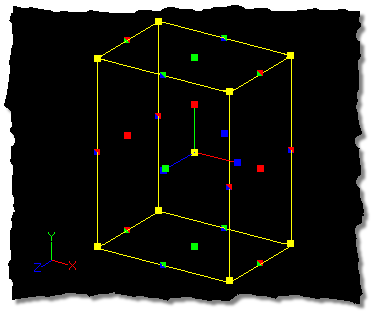

While designing a model, you will often find that you would like to shrink or
enlarge some of the parts. Of course, each control point could be adjusted
individually, but this would be tedious and time consuming. It is much easier to
group control points and use the Scale Manipulator.
Each of the handles along the edges of the manipulator box correspond in color
to the X, Y, and Z axes, so dragging the handle matching the color of the
axis you wish to scale in will allow the selected object to scale only in that
axis. Those handles with more than one color will scale the selected points in
both axes that match the color code of the handle. The axis that the object will
scale along is also shown on the Status Bar.
Once the control points to be scaled are grouped, click the Scale button, then
drag the appropriate manipulator box handle left to scale down, and right to
scale up. In the above image, dragging the red handles on either side of the
manipulator box would scale the box along the X axis only, while dragging the
green handles on the top and bottom of the box would scale only along the Y axis.
Dragging the box by the red and green handles will scale only in an XY plane,
and so on.
The yellow handles on the corners of the manipulator box will scale the
selected points on all axes. Holding down the Shift key while dragging these handles
will keep the aspect of the selected group of points while scaling.
The Group Tab on the Properties Panel also allows you to enter precise scale
values by manually typing them. Scale is listed as a percentage, with 100%
being equal to the original position of the control points when scaling first
started. When the mouse button is released after scaling, the scale value will snap
back to 100% as the grouped control points have assumed a new location.
Keep in mind that the pivot is very important for using this tool because it
determines in which direction the control points will move. For example, to
shrink a circle uniformly, you would need to position the pivot in the center of
the circle.
The Scale Manipulator also allows pivot movement by dragging the pivot handles
with the mouse. Rotating the pivot will rotate the manipulator, allowing you
to scale in different directions. This is to allow repositioning of the pivot
for lathing, scaling, etc.
The default keyboard shortcut key for the Scale Manipulator is S. Pressing S
will switch the Standard Manipulator to the Scale Manipulator, and pressing S a
second time will switch the Scale Manipulator back to the Standard Manipulator.
Related Topics:
Translate Manipulator Mode
Rotate Manipulator Mode